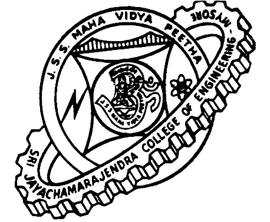

SRI JAYACHAMARAJENDRA COLLEGE OF ENGINEERING (AUTONOMOUS)
MYSORE - 570006
DEPARTMENT OF COMPUTER SCIENCE AND ENGINEERING

Student Alumni DataBase
Under the Guidance of
Ms. Soumya Mam
TEAM:
5th Semester 'B' Section
DEC - 2009
DBMS Laboratory Project